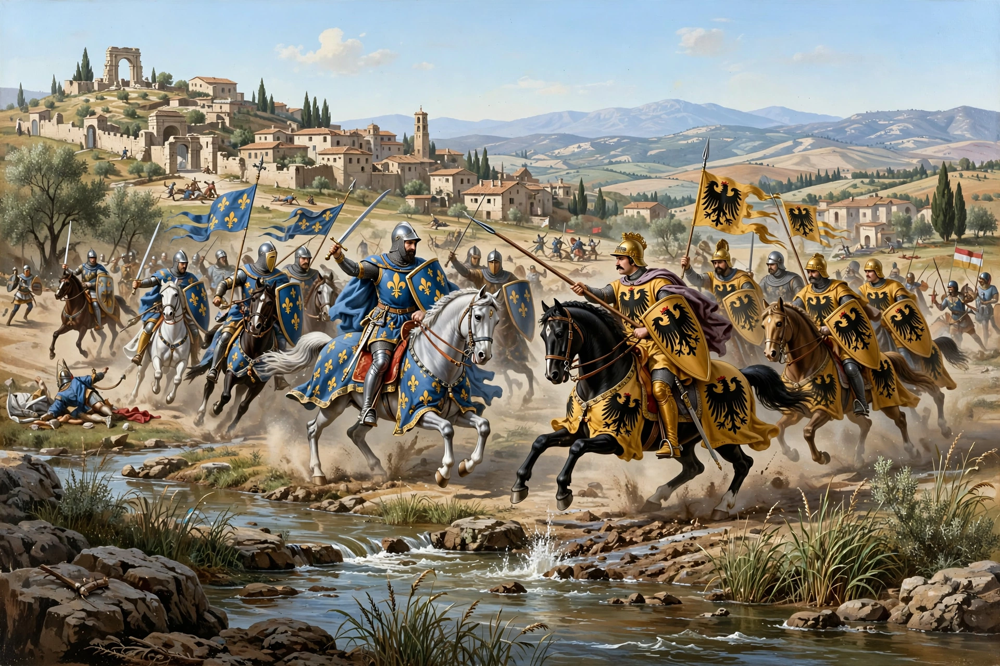

The Battle of Benevento was fought on 26 February 1266 near Benevento in southern Italy between the forces of Charles of Anjou and those of Manfred of Sicily. Manfred was killed, and Charles established his rule over the Kingdom of Sicily.

The papacy, hostile to the Hohenstaufen, offered the Sicilian crown to Charles of Anjou, brother of Louis IX of France. Charles invaded Italy in 1265. At Benevento his French cavalry defeated Manfred's German, Saracen and Italian forces. Dante places Manfred in Purgatorio.